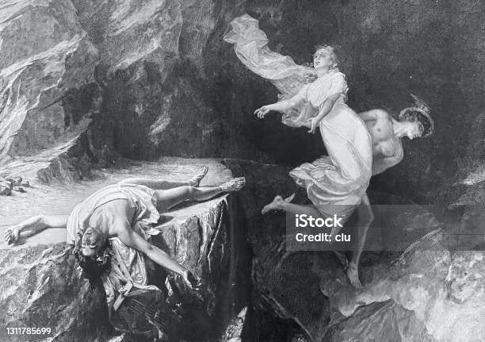

As the legend goes, Orpheus fell in love with a Eurydice a woman of grace and beauty. Unfortunately for them, Hymenaios, the God who adorned their marriage, predicted that their perfect union was not meant to last.
Soon after the wedding, Eurydice was dancing in the forest with some nymphs (classic greek moment) when she was bit by a snake and tragically died. When Orpheus found out he played a song filled with grief that moved both Gods and humans. With this song Orpheus descends to the Underworld to try to get his love back...